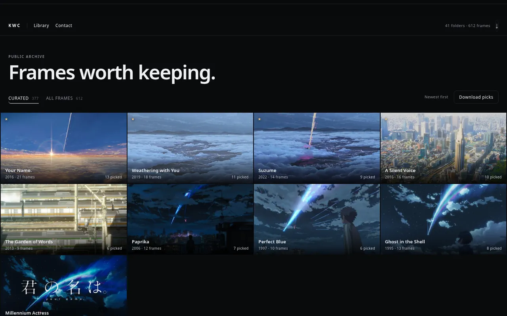
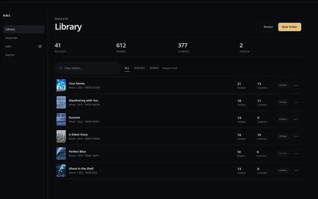
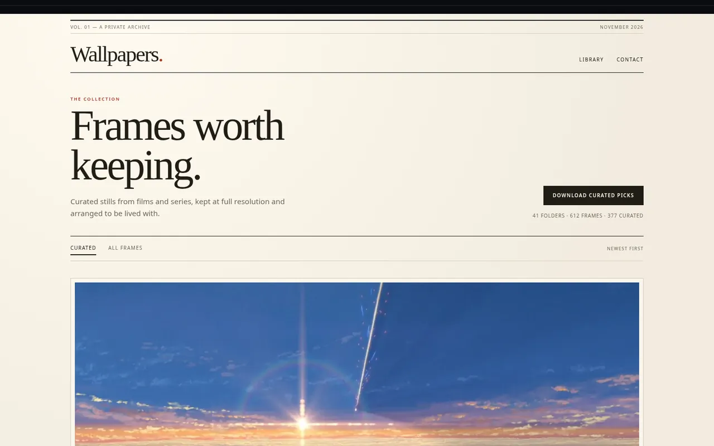
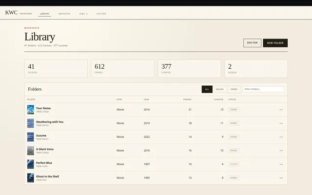
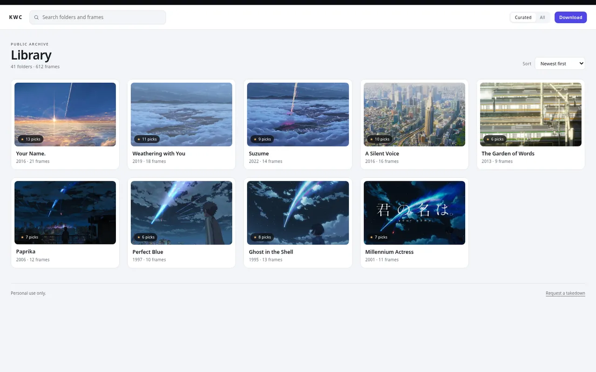
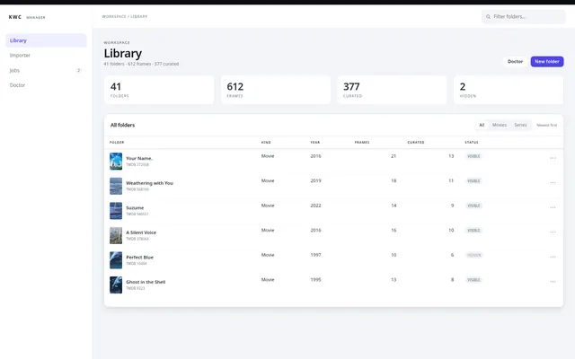

One skeleton, three skins
Every direction uses the same header anatomy, spacing scale, filter language, status stamp, progress bar, and row pattern. Only the tokens and layout rhythm change.
KWC · design directions
Same content, same components, three different temperaments. Open a direction, switch between the browser and the manager, and check both at desktop and phone size. Pick one, or take the parts you like from several.


Pico CSSThe archive as a dark room. Images run edge to edge, chrome recedes to hairlines, and warm gold appears only where the owner made a choice.


Bootstrap 5A print room. Serif captions, matte frames, and warm paper make the collection feel edited rather than dumped into a grid.


BulmaA working tool. One indigo accent, crisp cards, and a split frame view keep browsing fast and management dense without feeling cramped.
| 01 Noir | 02 Paper | 03 Studio | |
|---|---|---|---|
| Atmosphere | Cinematic, quiet | Editorial, warm | Operational, crisp |
| Browser home | Full-bleed grid, 2–5 columns | Oversized feature, matte plate grid | Filterable card grid |
| Frame view | Black stage with a filmstrip | Centered print with a caption | Split stage and inspector |
| Manager | Slim rail, dense rows | Masthead nav, paper table | Sidebar, stats, table |
| Framework | Pico CSS 2 | Bootstrap 5.3 | Bulma 1.0 |
| Choose when | The images should dominate | The collection should feel curated | Everyday management speed matters |
Every direction uses the same header anatomy, spacing scale, filter language, status stamp, progress bar, and row pattern. Only the tokens and layout rhythm change.
No accounts, no write actions, no management chrome. Browse, filter, open a frame, download. The manager carries all the operational weight.
Stats, row actions, job progress, and error detail appear only on the private side, in the same visual language as the public side.
The mobile toggle loads a true 390 px viewport, not a scaled screenshot: two-column grids, bottom tabs, collapsed navbars, and stacked inspectors.
Each direction opens on the browser library. The lab bar stays outside the design, so it will not be part of the final interface.
Use Browser / Manager and the screen buttons. Browser shows the library and a frame; manager shows folders and jobs.
Mobile renders the page in a real 390 × 844 frame. You can also open the direction URL on your own phone over the LAN.
“Noir's image grid with Studio's manager” is a valid answer. Tell me the direction and the parts worth keeping; I'll integrate them into both apps.
Sample content reuses one imported set across mock folders so the layouts can be judged with real imagery. The titles and counts are placeholders, not library data. Framework CSS is vendored under ui-lab/assets/vendor/; serve the folder with python -m http.server 8090 -d ui-lab.